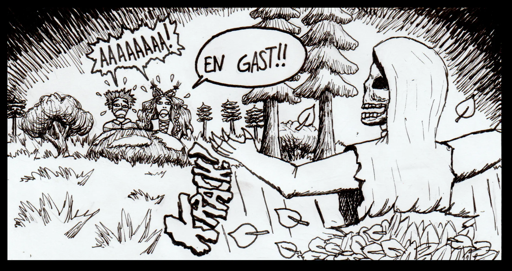
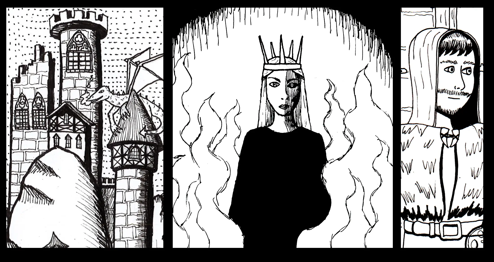
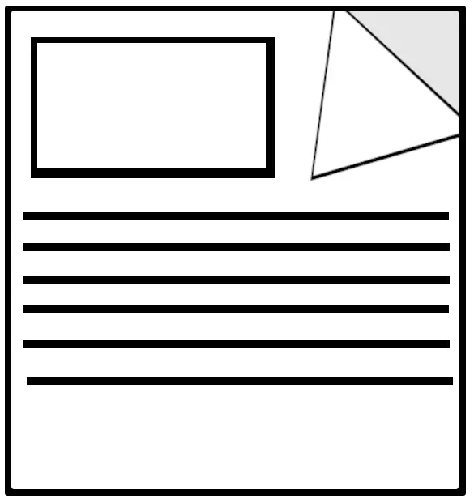

 
Skepnagård - en kostnadsfri serietiding på webben!
→ Läs serien på WebToon!Skepnagård är en serie med fantasytema. Den unge arkeologen Jan färdas mot sin vilja till den magiska världen Skepnagård. Där möter han häxan Yngva, den vackra prinsessan Elvira och många fler! Ett krig bryter ut mot den mörke härskaren Vondur! Vem ska bli först att lägga vantarna på de tre magiska draugur-klingorna?
Just nu finns 12 korta kapitel tillgängliga gratis online. Det första kapitlet släpptes den andra augusti 2025. Nya kapitel kommer med ojämna mellanrum då jag går på universitetet och skriver Skepnagård som hobbyprojekt.
Serien finns att läsa på plattformen WebToon Canvas och är skapad av hobbyisten H. Hansson (dvs. mig!). Publikationen är icke vinstdrivande. Om du har åsikter om serien går det att kommentera på kapitel i webtoon. Glöm inte att prenumerera för att få en notifikation när nya kapitel publiceras. Dela gärna med vänner!
Serien har åldersgränsen Teen på WebToon. Våld och andra teman som kanske kan vara skrämmande för yngre läsare kan förekomma.
Blogg-Posts
|  | Att skriva serier tar tid! (2026-1-24) |
|---|---|
| Video-trailer (2026-1-24) | |
| Alla omslag från Skepangård (2025-12-29) | |
| Vondurs Vers (2025-12-27) |